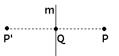
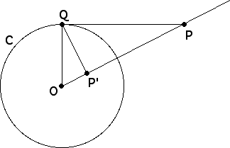

| Mirror reflection is familiar: the perpendicular
of a point P across a mirror m is the point P' for which
|
 |
Inversion in a circle was introduced by Apollonius of Perga (b 262 BC) in his last book, Plane Loci. Here is his definition.
|
 |
| Equivalently, P' is the inverse of P if |
| (i) P and P' lie on the same ray from O, and |
| (ii) OP*OP' = OQ2. |
| Equivalence is proved by showing |
Here are the formulas for the inverse of a point and the inverse of a circle.
Return to circle inversion fractals.